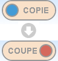
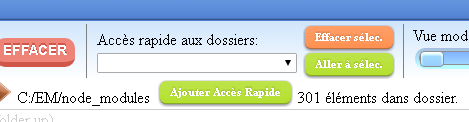
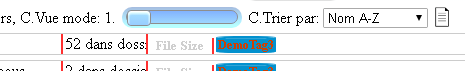

Quand l’application démarre vous devez choisir ou créer une nouvelle base de données.
Si ce n’est pas la première fois que vous lancez le programme, la base de données dernièrement utilisées est choisie automatiquement et vous pouvez en changer en sélectionnant une autre base de données déjà créée dans la liste de sélection ‘Changer de base de données’, ou bien entrer un nouveau nom dans le champ à côté du bouton ‘Nouvelle base données’ puis le cliquer ou appuyer sur "Enter".
Si vous lancez le programme pour la première fois, vous devez entrer un nom dans ce champ.
Chaque base de données est associée à une unité de disque comme ‘C:’, ‘D:’, ’G:’, etc. (sous Windows) ou ‘/’, ‘/media/user/externaldrive’, etc. (sous Linux), ou ‘/Volumes/yourdrive’ (sous macOS) mais ce disque associé peut être modifié à tout moment dans les options du programme, de façon que si vos données à étiqueter sont sur un disque externe tout fonctionne correctement, même si le système a changé le chemin d’accès à l’unité que vous avez utilisez la dernière fois, ou que vous changiez de système.
Donc, sélectionnez l’unité si nécessaire (par défaut c’est l’unité à partir de laquelle le programme est exécuté) et appuyez sur le bouton ‘Lancer!’ pour démarrer.
Les autres boutons des options initiales sont ‘Importer données’; qui vous permet de choisir un fichier dans lequel une base de données a déjà été exportée et de l’importer dans la base de données que vous avez choisie, et ‘Effacer base de données’; pour effacer la base de données que vous avez choisie.
Un bouton qui vous permet de changer l'interface entre le mode "couleur" et "nuances de gris" est également disponible, en plus d'un sélecteur de langue, dans cette fenêtre d'options initiale.
Vous trouverez plus d’information sur l’import/export et sur les bases de données dans la partie "Gestion de la bases de données et options" de l’aide.
Note importante: Lorsque vous avez utilisé une certaine version du programme et que vous l'avez mise à jour dans une version plus récente, il n'y a pas de problème, mais, Si vous avez mis à jour la version et que plus tard vous utilise l'ancienne version, il est possible (pas toujours) que la liste de la base de données disparaisse. À cause de cela est recommandé d'exporter de la base de données dans un fichier de temps en temps, l'importation de données à partir du fichier fonctionne toujours bien, indépendamment de la version.
Après avoir lancer le programme et appuyer sur ‘Lancer!’ dans les options initiales de la base de données, l’interface utilisateur est affiché.
Il y a deux fenêtres principales dans cet programme : l’explorateur, qui est affiché au départ, et le chercheur, vous pouvez aller de l’un à l’autre en sélectionnant l’onglet correspondant sous le logo "Tagstoo".
Les éléments qui seront affichés dans les deux fenêtres principales (les éléments d'un répertoire dans l'explorateur et les éléments recherchés dans le chercheur) peut être sélectionné de manière cumulative à l'aide de la souris (par exemple, plusieurs groupes) en comptant également sur les aides suivantes:
| Ctrl-a | Sélectionner ou désélectionner également tous les éléments du dossier ou trouvés. |
| Shift | Sélectionner tous les éléments entre l’avant-dernier sélectionné et le dernier. |
| Echap | Désélectionner tous les éléments sélectionnés. |
Pour accéder à un dossier, presser et maintenir le bouton de la souris sur ce dossier (aussi bien dans l’arborescence du panneau gauche que dans les dossiers accessibles affichés dans le panneau droit à tout moment).
Pour ouvrir la structure d’un dossier dans le panneau gauche, cliquer simplement (sans maintenir le bouton enfoncé) sur le dossier choisi.
Pour lancer un fichier exécutable ou voir un fichier de données, pressez et maintenez le bouton de la souris sur le fichier. Si c’est un programme il sera lancé, si ce sont des données, par exemple une vidéo ou un fichier texte, le programme défini par défaut dans votre système pour ce type de fichier sera lancé pour l'afficher.
Une option supplémentaire est disponible pour les images, ainsi, la visionneuse d’images définie dans votre système est lancée quand vous pressez et maintenez le bouton de la souris sur le nom ou tout autre endroit de l’élément sauf l’image elle-même, si vous cliquez sur l’image, une visionneuse interne à Tagstoo sera lancée.
Il convient de mentionner qu'il existe également l'option permettant de créer des dossiers en cliquant sur l'icône correspondante (  ).
).
Il y a plusieurs modes d’affichage, le premier ‘1’ (qui est le mode utilisé au départ du programme) montre les dossiers et les fichiers en liste, chaque élément occupant une ligne. Par colonne il y a premièrement une icône (ou une image réduite) et le nom, deuxièmement l’extension du fichier ou le nombre d’éléments contenus dans le dossier, troisièmement la taille des fichiers, quatrièmement les étiquettes de l’élément, cinquièmement la date de dernière modification de l’élément et sixièmement la durée du fichier si c’est un fichier audio ou vidéo.
Les autres modes, ‘2’ à ‘9’ présentent l’élément comme une carte de tailles différentes, de la plus petite (‘2’) à la plus grande (‘9’).
Chacun des modes sélectionné peut montrer les éléments triés selon l’ordre choisi dans le sélecteur ‘Trier par:’ de la barre d’outils. Par défaut, les éléments sont triés par nom en ordre croissant (A-Z), les autres options de tri sont : par nom en ordre décroissant (Z-A), par extension (A-Z) ou (Z-A), par taille de la plus petite à la plus grande ou inversement, enfin par date de dernière modification de la plus récente à la plus ancienne ou le contraire.
Ceci est utilisé pour appliquer ensuite une action système ("copy", "move", "delete") à plusieurs éléments de votre choix. Dans le panneau de droite utilisez la souris pour sélectionner plusieurs éléments, vous pouvez aussi les sélectionner un par un ou utiliser la touche "Shift" pour sélectionner une plage d’éléments entre deux éléments et combiner ces sélections pour choisir ce que vous voulez.
Il y a deux façons de copier ou déplacer les éléments sélectionnés, dans les deux vous devez faire attention à l’option sélectionnée dans la bascule ‘COPIE/COUPE’ de la barre d’outils.
La première façon est de "glisser/déposer" les éléments choisis dans le panneau droit sur un dossier dans le panneau gauche, ceci copiera ou déplacera les fichiers selon l’option choisie dans la bascule ci-dessus.
L’autre façon est de sélectionner un dossier dans le panneau gauche, de faire un double clic dessus puis de presser le bouton ‘COLLER’ dans la barre d’outils. Ceci déplacera ou copiera les éléments sélectionnés, selon l’option choisie dans la bascule ci-dessus.
Choisir les éléments que vous voulez effacer dans le panneau droit et presser le bouton ‘EFFACER’ de la barre d’outils. Faites attention, il n’est pas possible d’annuler cette action (par sécurité, une demande de confirmation est affichée quand ce bouton est pressé).
Pour renommer un fichier ou un dossier, faire un double-clic sur le nom de l’élément et écrire le nouveau nom.
On peut annuler la majorité des actions possibles sur les éléments, sauf l’effacement d’un dossier ou d’un fichier. Par exemple, déplacer ou copier des fichiers ou des dossiers, les renommer, étiqueter un fichier ou un dossier ou un dossier et son contenu et effacer une étiquette d’un élément.
Pour annuler l’action indésirable, cliquer sur le bouton ‘DÉF’ de la barre d’outils.
Dans chaque base de données, à part les informations sur les étiquettes sont également stockés des chemins vers les dossiers à accès rapide
Vous pouvez ajouter un dossier à cette liste en ouvrant ce dossier et en cliquant sur ‘Ajouter Accès Rapide’, ainsi, où que vous soyez, si vous sélectionnez le dossier dans cette liste et cliquez sur ‘Aller à selec.’, le dossier sera ouvert dans l’explorateur.
Vous pouvez également enlever un dossier de cette liste en cliquant sur ‘Effacer sélec.’.
Il y a un bouton "Refresh" en haut à droite du panneau de l’arborescence des dossiers et un autre en haut à droite du panneau d’affichage des contenus, ils actualisent chacun le panneau correspondant.
C’est pratique si, pour une raison quelconque, les informations ne sont pas correctement affichées ou pas à jour (par exemple si vous avez fait une modification dans le système de fichier en dehors de Tagstoo, et que le dossier concerné était ouvert dans Tagstoo).
Les étiquettes sont gérées en bas de la fenêtre, et pour ajouter une étiquette à un élément, il faut la choisir et faire un "glisser/déposer" sur l’élément désiré.
On peut modifier l’ordre des étiquettes aussi bien dans leur zone de définition que dans la liste des étiquettes de chaque élément.
Pour créer une nouvelle étiquette, cliquer sur le bouton ‘Ajouter Nouveau Etiquette’. Une nouvelle fenêtre s’ouvre avec trois options à choisir: la forme de l’étiquette (à choisir dans les formes proposées) sa couleur (en cliquant dans le cercle) et le texte (à introduire dans la zone de saisie). Vous pouvez voir son aspect dans la zone d’aperçu.
Pressez sur ‘Créez étiquette!’ si vous êtes satisfait du résultat.
D’abord vous devez sélectionner l’étiquette à éditer ou à effacer dans la liste des étiquettes créées.
Si vous voulez éditer l’étiquette, les mêmes options que pour la création sont disponibles mais dans ce cas, les changements seront appliqués à l’étiquette choisie quand vous presserez le bouton ‘Enregistrer étiquette éditée!’.
Si vous souhaitez effacer une étiquette, appuyez simplement sur ‘Supprimer étiquette!’ après l’avoir sélectionnée. Faites attention car toutes les associations avec cette étiquette seront perdues, par sécurité, il est demandé une confirmation.
Pour ajouter une étiquette à un élément, la choisir dans la liste du bas de la fenêtre puis la glisser/déposer dans l’élément.
Pour ajouter une étiquette à un dossier vous pouvez la glisser/déposer sur un dossier dans l’arborescence du panneau de gauche ou sur un dossier du panneau de droite. Dans les deux cas, le programme vous demandera si vous voulez étiqueter seulement le dossier ou aussi les éléments qu’il contient. Si vous choisissez cette dernière option, l’étiquette choisie sera associée à tous les éléments qu’il contient (mais pas aux éléments contenus dans les sous-dossiers de ce dossier).
Pour que le programme ne vous demande plus si vous désirez étiqueter les éléments contenus dans le dossier à étiqueter, cochez l’option correspondante dans le menu "Options" (voir ci-dessous)
>On peut rappeler ici que vous pouvez changer l’ordre des étiquettes dans chaque élément par "glisser/déposer".
Pour supprimer les étiquettes associées aux éléments, il existe deux manières possibles: pour ceux qui utilisent une souris, il suffit de cliquer sur le tag avec le bouton droit de la souris, l'autre moyen est d'activer la "gomme des étiquettes" en cliquant sur la gomme (icône  ) puis cliquer sur les étiquettes à effacer.
) puis cliquer sur les étiquettes à effacer.
Vous pouvez copier toutes les étiquettes d'un élément dans tous les autres éléments que vous voulez, pour le faire d'abord vous devez avoir sélectionné les éléments où vous voulez que les étiquettes soient copiées, puis avoir le copieur des ettiquetes activé (icône  ) cliquer sur la zone tags du élément à partir duquel vous voulez qu'il soit copié
) cliquer sur la zone tags du élément à partir duquel vous voulez qu'il soit copié
Dans cette fenêtre vous pouvez chercher les éléments ayant les étiquettes désirées.
>Dans le volet de gauche de la fenêtre vous pouvez choisir les options de recherche et ajouter les étiquettes dans n’importe laquelle des zones de saisie par "glisser/déposer".
La première option est de choisir à partir de quel dossier la recherche commence (qui inclura tous les éléments et sous-dossiers dépendants de ce dossier), par défaut c’est la racine de l’unité associée à la base de données sélectionnée (c.a.d. "C:" ou "D:" ou une autre unité).
Pour changer ce dossier racine appuyez sur le bouton ‘Sélectionnez pour chercher à partir de..’, et choisir le dossier dans la fenêtre qui va apparaître.
Ensuite et éventuellement, vous pouvez définir si les éléments que vous souhaitez rechercher (fichiers ou / et dossiers) doivent être à leur tour sous des dossiers qui doivent comporter des balises spécifiques.
Ici, vous pouvez ajouter tous les champs de saisie dont vous avez besoin et dans chaque champ de saisie, vous pouvez ajouter des balises qui doivent nécessairement figurer dans le dossier parent de l'élément recherché (pas nécessairement les dossiers parent directs).
Une autre option est de chercher soit des dossiers, soit des fichiers, soit des dossiers et des fichiers. Après avoir choisi et appuyé sur le bouton ‘Chercher’ la recherche sera faite sur le type d’éléments choisi pour les étiquettes choisies.
Vous pouvez ajouter toutes les zones de saisie dont vous avez besoin pour remplir vos critères de recherche, dans chaque champ vous pouvez ajouter les étiquettes que les éléments recherchés devront avoir, et en utilisant divers champs vous pouvez créer des conditions différentes que les éléments devront satisfaire pour être ajoutés à la liste des résultats.
Par exemple, dans un champ vous pouvez ajouter les étiquettes "chat" et "blanc" et dans un autre champ ajouter les étiquettes "chien" et "brun" pour que les résultats vous donnent tous les chats blancs et les chiens bruns.
Vous pouvez ajouter tous les champs nécessaires en cliquant sur ‘Autre filtre (Qui ont)...’.
Sous ces champs il en existe une autre sorte pour spécifier les étiquettes que les éléments ne doivent pas avoir, au cas où vous en auriez besoin.

Le chercheur a ses propres options d’affichage et de tri, indépendamment de celles de l’explorateur, elles sont accessibles par ses propres sélecteurs en haut du panneau des résultats de recherche. De plus, il est possible de séparer les résultats de la recherche en plusieurs pages avec x éléments recherchés sur chaque page pouvant être sélectionnée dans le sélecteur correspondant.
Aussi, à droite de la sélection de la trier de recherche, il y a une icône qui affiche une feuille avec du texte, en cliquant dessus, vous pourrez afficher une vue amiable imprimable des résultats de recherche actuels avec leurs étiquettes et une liste de texte de les noms des dossiers/fichiers recherchés qui peuvent également être enregistrés sous forme de fichier texte (de sorte que cela peut être utilisé par exemple comme une liste de lecture pour un programme externe).
Quand vous pressez et maintenez appuyé le bouton de la souris sur un dossier dans les résultats de recherche, le dossier est ouvert dans la fenêtre de l’explorateur.
Si vous appuyez et maintenez le pointeur sur un fichier, il sera exécuté ou visualisé, comme d'habitude, par la visionneuse système par défaut pour ce type de fichiers. Comme dans l'explorateur, une autre méthode est ajoutée pour les images, c'est-à-dire si vous cliquez sur une image, la visionneuse interne du programme est lancée (qui ont avantage que la sélection précédente / suivante correspond aux images des résultats recherchés).
Vous pouvez ajouter ou enlever des étiquettes à un résultat de recherche (et changer l’ordre des étiquettes) de la même façon que dans l’explorateur.
Pour copier ou déplacer des fichiers ou des dossiers résultant d’une recherche, d’abord sélectionnez les éléments en cliquant dessus, ensuite vérifiez que la position de la bascule ‘COPIE/COUPE’ dans la barre d’outils est bien ‘COUPE’ si vous voulez déplacer les éléments ou "COPIE" si vous voulez les copier. Ensuite appuyez sur le bouton ‘COLLER’.
Le programme va vous demander si vous voulez copier ou déplacer aussi les étiquettes associées. Par exemple, imaginez que vous voulez copier les résultats obtenus dans un dossier ou une unité séparés, pour une présentation qui n’a aucun rapport avec ce programme, dans ce cas vous pouvez choisir de ne pas copier les étiquettes.
Dans les deux actions de copier/déplacer, si vous choisissez de copier/déplacer aussi les étiquettes, vous devez choisir un dossier cible qui soit dans l’unité associée à la base de données active. Par contre, si vous choisissez de ne pas copier/déplacer les étiquettes, vous pouvez choisir n’importe quelle unité disponible.
Il sera probablement rare de choisir de déplacer les éléments sans leurs étiquettes, mais souvenez-vous que, dans ce cas, les associations des étiquettes aux éléments déplacés seront perdues.
De la même façon que dans l’explorateur. Choisissez simplement les éléments à effacer et appuyez sur ‘EFFACER’ dans la barre d’outils, par sécurité une confirmation vous est demandée.
De la même façon que dans l’explorateur, vous pouvez changer le nom d’un fichier par un double clic sur ce nom et le remplacer. Pour l’instant il n’est pas possible de renommer un dossier dans le chercheur (mais vous pouvez le renommer dans l’explorateur).
En cliquant sur l’icône des options (la roue dentée bleue dans la barre d’outils) une fenêtre apparait avec les options de la base de données et les options générales.
Dans cette fenêtre vous pouvez changer la base de données en cours d’utilisation ou l’unité associée, simplement en choisissant une base de données dans la liste (ou en créer une nouvelle en lui donnant un nom non encore utilisé et en cliquant sur ‘Nouvelle base données’) et choisir une unité dans la liste des unités disponibles (‘Changer lecteur associé’) respectivement.
Quand vous avez sélectionner la base de données souhaitée, vous pouvez cliquer sur ‘Chargez-le’ pour la charger avec l’unité associée dans l’application.
Vous pouvez aussi effacer la base de données sélectionnée en cliquant sur ‘Effacer base de données’.
Une autre option dans cette fenêtre est l’importation ou l’exportation des données d’une base.
Note: Le programme ne nécessite pas d’installation, aussi on peut se demander où sont stockées les données? Où les étiquettes et leurs associations sont-elles stockées si l’exécutable ne change pas et si rien n’est stocké dans les fichiers et dossiers concernés? La réponse est: dans une base de données stockée quelque part dans le chemin ‘C:\users\%user%\AppData\Local\Google\Chrome\User Data\Default’ (sous Windows) or ‘/home/%user%/.config/google-chrome/Default/IndexedDB/’ (sous Linux) or ‘/Users/%user%/Library/Application Support/Google/Chrome/Default/IndexedDB/’ (sous MacOS) sous une forme lisible uniquement par le programme.
Ainsi, les données sont stockées à un endroit accessible uniquement à l’utilisateur en cours dans sa machine en cours.
Si vous voulez lire les données dans une autre session ou dans la session d’un autre utilisateur ou sur un autre ordinateur, ou si vous voulez avoir les données dans un fichier et effacer la base de données pour une raison quelconque, ou simplement avoir une sauvegarde, vous pouvez exporter les données dans un fichier et importer ce fichier plus tard, où vous le souhaitez.
Pour exporter les données de la base de données sélectionnée, s’assurer que la base que vous souhaitez exporter est bien la base sélectionnée (‘Base de données (BD) actuellement sélectionnée’) et qui n’est pas nécessairement la base de données en cours d’utilisation, et appuyez sur ‘Exporter données’, vous devrez sélectionner un fichier (sous Windows vous pourrez le créer par le menu contextuel ouvert par le bouton de gauche de la souris) où seront exportées les données, le fichier peut avoir l’extension que vous voulez.
Pour importer les données, sélectionnez la base de données réceptrice et cliquez sur ‘Importer données’, le programme vous demandera de choisir le fichier où se trouvent les données exportées, et, si ces données sont valides, elles seront importées et prêtes à être utilisées dans la base de données choisie.
Quelques autres options sont également disponibles dans cette fenêtre:
• Bascule entre les modes couleur et nuances de gris; une bascule pour changer les couleurs de l’interface utilisateur comme il vous convient le mieux.
• Confirmation pour fermer le programme; elle est désactivée par défaut.
• Vérifier les mises à jour au démarrage; il cherchera si une nouvelle version est disponible, par défaut est désactivé.
• Afficher astuces lorsque le programme lancé; elle est active par défaut.
• Afficher tooltips (aide en ligne); elle est active par défaut.
• Chargez balises de démonstration lorsqu'une nouvelle BD est initialisée; elle est active par défaut, mais il est recommandé de la désactiver quand vous connaîtrez mieux l’interface.
• Automatiquement ne pas ajouter d'étiquettes aux sous-éléments de dossier; par défaut cette option est désactivée. Si vous la cochez, quand vous ajouterez une étiquette à un dossier, le programme ne vous demandera plus si vous voulez affecter cette étiquette à ses sous-éléments et ne le fera pas.
• Aperçu des images et des epubs en Vue mode 1; par défaut cette option est désactivée, parce que dans ce mode, les miniatures sont véritablement très petites, mais si pour quelqu’un cette option pourrait être utile, elle est disponible.
• Sur le visualiseur d'image passez à l'image suivante toutes les X secondes; vous pouvez spécifier l’intervalle X et activer cette option pour que la visionneuse interne passe à l’image suivante toutes les X secondes.
( Merci à Marceau Guihard pour la traduction en français, bien que j'ai apporté quelques modifications plus tard parce que le programme a changé, toute erreur est la mienne! ).